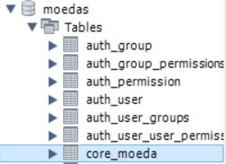
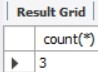
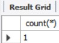

Os bancos de dados são o coração de muitos sistemas, oferecendo segurança dos dados e agilidade nas buscas.
Os objetivos de um sistema de banco de dados são o de isolar o usuário dos detalhes internos e promover a independência dos dados em relação às aplicações. O banco de dados é responsável pelo armazenamento e acumulação de dados devidamente codificados e tem como principal objetivo a transmissão das informações desejadas.
A maioria das aplicações desenvolvidas utilizam consultas para obter resultados.
Para isso usamos a linguagem SQL ela é a linguagem de operação padrão para banco de dados relacional.
A tabela abaixo foi criada usando o SGBD MySQL

Para começarmos a usar instruções no banco de dados precisamos criar um banco de dados
Temos o banco de dados, agora precisamos das tabelas, devemos usar o comando:
Para criar uma tabela usamos o comando:

É muito usado o comando acima para saber a quantidade de linhas que a tabela possui.

WHERE condição – Limita a consulta às linhas que satisfazem a condição.
A complexidade das consultas aumentam de acordo com a necessidde, por fins visuais vou me limitar aos exemplos acima